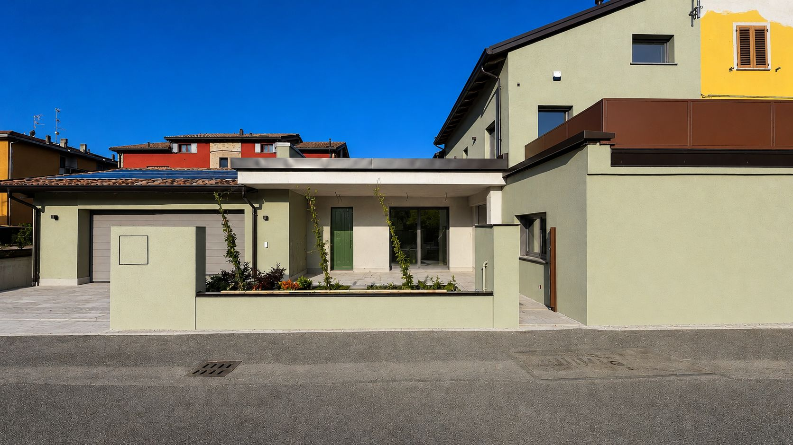
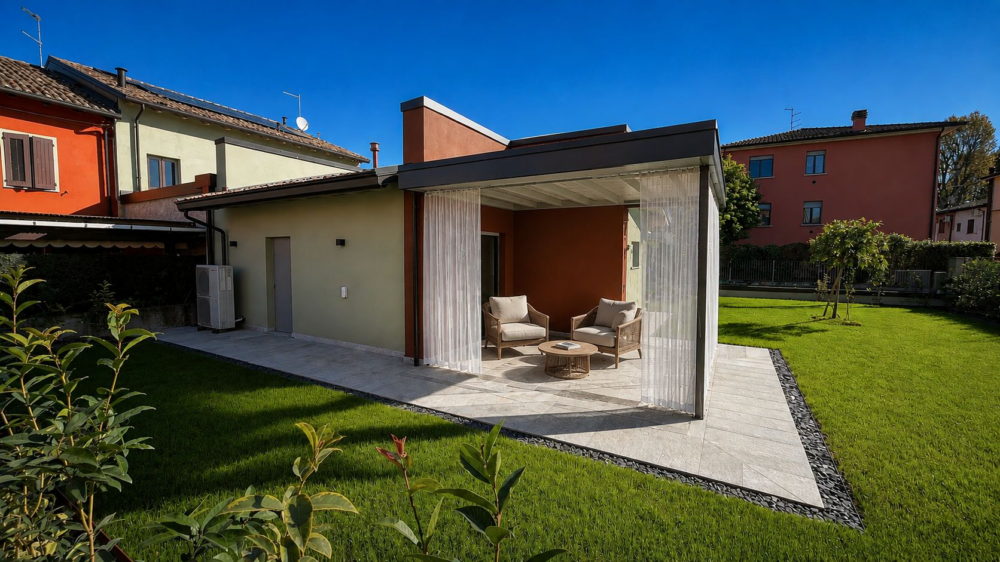
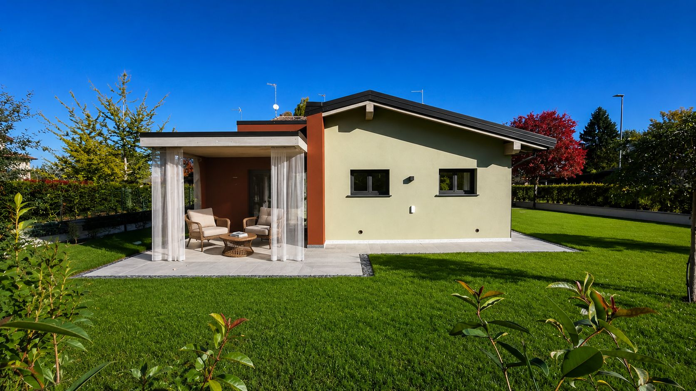

Casa R|D
Dare nuova vita a una memoria di famiglia.
Casa R|D nasce dalla trasformazione della casa del nonno del committente. Il progetto ha riguardato sia un ampliamento sia una revisione completa degli spazi esistenti, mantenendo un filo di continuità con ciò che quella casa era già.
Non è un punto di partenza neutro, ma nemmeno il tema centrale del progetto: la casa doveva prima di tutto rispondere alle esigenze di chi l’avrebbe abitata.
Una casa ricevuta, non semplicemente una casa esistente
Casa R|D nasce da una casa di famiglia, quella del nonno. Una presenza che aveva quindi un valore che andava oltre l’edificio in sé. Il progetto non parte dall’idea di cancellarla per ricominciare, ma dalla possibilità di farla diventare una casa nuova continuando a riconoscere ciò che era già lì. La parte originaria è stata riqualificata tecnologicamente e completamente ripensata negli spazi interni, mantenendo invece all’esterno le forme che appartenevano alla casa esistente.

Prima
Dopo
Il nuovo non cerca di imitare il vecchio
L’ampliamento sceglie un linguaggio diverso. È più basso, prevalentemente orizzontale, con coperture e volumi più contemporanei. Non prova a confondersi con la casa originaria, ma nemmeno a contrapporsi ad essa. Il progetto ha cercato un equilibrio tra le due parti: lasciare leggibile ciò che apparteneva alla casa del nonno e aggiungere ciò che serviva alla nuova famiglia, facendo in modo che alla fine fossero percepite come parti di una stessa casa.



Un giardino più piccolo, ma parte della casa
L’ampliamento occupa inevitabilmente una parte del terreno disponibile. Il giardino che rimane non ha quindi le dimensioni di quello di altre nostre case. Proprio per questo è stato progettato insieme all’architettura. Gli ambienti del piano terra, sia quelli ricavati nella casa esistente sia quelli nuovi, cercano continuamente il rapporto con questo spazio esterno. Le aperture, le zone pavimentate, il verde e il piccolo spazio coperto ne fanno qualcosa di più di ciò che rimane intorno alla costruzione.
Il giardino diventa una stanza all’aperto della casa.
Continuare una storia
Alla fine Casa R|D non racconta tanto il recupero di un edificio quanto il modo in cui una casa può passare da una generazione all’altra senza rimanere ferma nel tempo. La casa del nonno continua ad esserci, ma è diventata la casa di qualcun altro, con altri spazi, altre esigenze e un altro modo di viverla.
Conservare una memoria non significa necessariamente conservare tutto com’era. A volte significa permetterle di continuare.